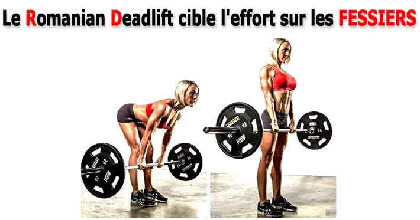
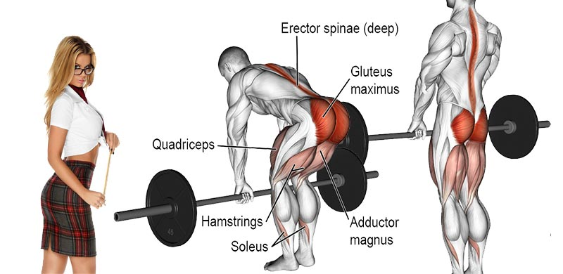

Le soulevé de terre roumain, ou romanian deadlift en anglais, est un mouvement de musculation très complet qui
permet de renforcer de nombreux groupes musculaires du bas et du haut du corps, dont notamment ceux de la
chaine postérieure (ischio-jambiers, fessiers, dos).

Le soulevé de terre est également intéressant à intégrer dans un programme de musculation afin d’accroître sa
force musculaire, de prendre de la masse, d’améliorer son explosivité, ou simplement d’améliorer sa condition
physique générale.

Application
Debout, pieds légèrement écartés, fléchissez les jambes en “poussant” les fesses vers l’arrière afin de garder votre
dos bien droit (voir légèrement cambré). Saisissez alors la barre, bras tendus, mains en pronation (paumes vers
vous) avec un écartement légèrement supérieur à la largeur des épaules. Regardez en face de vous (à l’horizontal),
puis contractez vos abdominaux et soulevez la barre (toujours bras tendus) en poussant avec vos jambes, et en
conservant la barre proche de vos tibias. Lorsque la barre arrive au niveau de vos genoux, redressez alors votre
buste en tendant vos jambes, sans toutefois verrouiller complètement vos genoux (si vous tenez à vos
articulations!). Lors de la phase de descente, fléchissez vos jambes et “poussez” à nouveau vos fesses vers
l’arrière afin de conserver le dos bien droit, sangle abdos/lombaires toujours bien contractée, puis posez
délicatement la barre au sol.
Au niveau de la respiration, inspirez avant de soulever la barre, puis bloquez votre respiration lors de la phase
d’extension des jambes. Expirez en fin d’effort, lorsque vos jambes sont tendues.
IMPORTANT : tout au long de la réalisation du mouvement de soulevé de terre, votre dos doit être totalement plat,
voire légèrement cambré, mais jamais arrondi ! Par ailleurs, à l’image du squat, vos tibias doivent rester en
position verticale, tels que vos genoux ne dépassent pas vos pointes de pieds, et vos talons doivent rester bien
ancrés au sol et ne décoller en aucun cas.
Mucles travaillés
Les muscles ischio-jambiers, grands fessiers, lombaires, grand dorsal et grand rond sont principalement sollicités.
Interviennent ensuite les muscles trapèze, abdominaux (grand droit et obliques), quadriceps, adducteurs, petits et
moyens fessiers. Enfin, lors de la réalisation de deadlift avec charges lourdes, il ne faut pas oublier les muscles
des avant bras, les triceps, et les épaules (faisceau postérieur des deltoïdes) qui sont sollicités afin de soutenir
la barre de musculation (plus les charges additionnelles).
Certains muscles pourront toutefois être plus ou moins sollicités lors de la réalisation de variantes de cet
exercice.
Suite à la réalisation du soulevé de terre il est important d’effectuer des exercices d’étirement des
ischio-jambiers, fessiers et du dos afin de conserver une bonne souplesse musculaire.